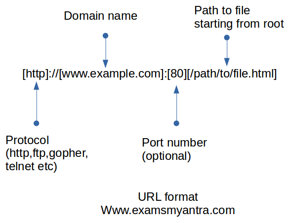

web browser ที่เป็น client web browser อาจเป็น
- Desktop web browser
- Mobile web browser
- Application ที่สามารถแสดงหน้าเว็บได้
- Appliance (watch, fridge, car, etc.) อุปกรณ์ที่ไปดึงทรัพยากรบนเว็บมาแสดงผลได้
URL (Uniform Resource Locator) คือ ที่อยู่ของเว็บไซต์หรือสิ่งที่ต้องการหา
รูปแบบของ URL
- Scheme หรือ Protocol คล้ายกับ HTTP / HTTPS / FTP
ตามด้วย colon (:) และ double slash (//) ที่แยกscheme ออกจากส่วนอี่เหลือของURL
- Server domain name เป็นชื่อของ Server
- Port (default:80)
URL ที่ไม่มีเลขportปรากฏ เพราะเป็นport 80
- Path to resource
- Query string (optional)
- Fragment ID (optional)

URL ในหน้าปัจจุบัน จะแสดงอยู่ด้านบนของ browser และ URL ยังปรากฏในHTML tagที่อยู่ในresourceที่ใช้ในหน้านั้น(จะถูกเรียนโดยอัตโนมัติ) และยังมีhyperlink(ที่ถูกเรียกเมื่อคลิกที่link)
Resource อื่นๆ เช่น รูปภาพ, JavaScript, CSS (Cascading style sheets) โดยtagจะมีattribute เพื่อใส่ URL ที่ต้องการไปหา หรือดึงมาแสดงผล เช่น anchor tag จะมี hypertext reference ที่สามารถระบุURL เพื่อไปยังหน้าถัดไปที่userต้องการเรียกใช้โดยการคลิกที่link
การทำงานเมื่อเรียกPageด้วยURL
- พิมพ์ URL ที่ location bar ด้านบนของ browser และกดค้นหา
- browser จะใช้คำสั่ง GET เพื่อนำURLไปที่domain nameที่เป็น server และเครื่องจะรับ request และนำPATHไปหาตำแหน่งที่อยู่ในฐานข้อมูล หรือ ในแฟ้มของระบบ
- หาที่อยู่ของresourceที่web browser ต้องการ เมื่อเจอจะคืนค่าไปที่browser
- browser จะรับ file และเริ่มประมวลผล